AK, DC, ID, MI, NY, NV have non-cumulative results
For DC and NV, there is a day when positive tests decrease from the previous day. For the other four states, there are days when negative tests decrease.
Thanks for putting this together!
Comments
I wonder if the problem is an error in the data source in which corrections for prior day results are included as adjustments on the day the error was discovered. This is common in the banking world because of the value of keeping past transactions immutable. It’s poor practice for scientific data, however, because the test counts on a given day matter.
If the problem is deferred adjustment, the idea solution is to inform the data sources and ask for better quality data. Short of that, an corrective approach is to reverse the error to the best extent that the data allows: Where a daily result is negative, set that day to zero, and decrease the count of the previous day by the corresponding amount.
Such a correction would not be perfect since (a) you don’t know for sure whether the error was from the previous day versus earlier and (b) it doesn’t correct any of the cases where adjustments didn’t cause negative result. Still, it leads to better data quality than making no correction and avoids the confusion of negative daily counts.
Hello, and thank you for helping us clean our data. Please see the following:
New York:
- [ ] 3/7 to 3/8 the total changed due to pending tests no longer being reported.
- [ ] 3/10 to 3/11 should be correct 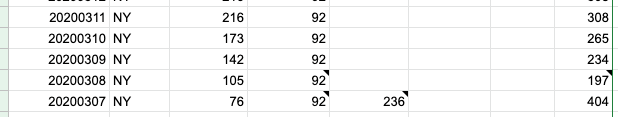
Oklahoma
- [ ] 3/20 to 3/21 the variance in totals is tied to the unreliable Pending category. It may be that the data point was phased out and our data was affected by this transition;
Ohio
- [ ] 3/16 to 3/17 variation in data is due to Pending data no longer being published. 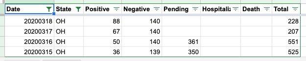
New Jersey
- [ ] 3/16 is infact incorrect: 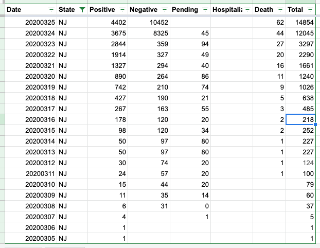
- [ ] corrected
Hawaii
- [ ] Pending for 3/19 decrease per the state 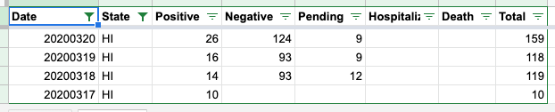
Michigan stopped reporting pending data as of 3/17
Kansas stopped reporting pending data as of 3/11 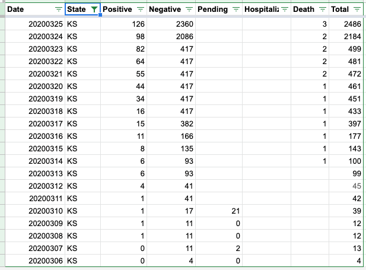
Iowa stopped reporting pending data as of 3/14 Deleware stopped reporting pending data as of 3/17 DC has fluctuating pending data 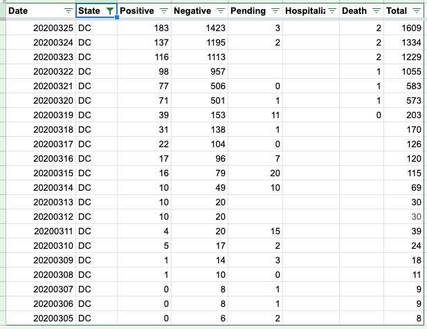
Thank you for these clarifications, @careeningspace, and for working on providing these data so accessibly! In terms of cleaning up these records for use:
- Has the NJ correction been applied to the live data?
- Given the inconsistencies with pending data, do you foresee any problems with subtracting pending cases from the totals?
The NJ correction should be in the live feed. Going forward, our API will no longer be focusing on including Pending in our “Total”. You can find more detail on our API Page
- [ ] totalTestResults - Calculated value (positive + negative) of total test results.
- [ ] total - DEPRECATED Will be removed in the future. (positive + negative + pending). Pending has been an unstable value and should not count in any totals.
As for subtracting historical “Pending” data - if you want a clean Total, you can sum Positive and Negative.
Great, thanks. That fixes problems in many states and leaves only AK, DC, HI, ID, KY, MI, NV, and SC with negative “increases”: covidtracking_problemdates.xlsx
covidtracking %>% arrange(state, date) %>% group_by(state) %>% filter_at(vars(ends_with("Increase")), any_vars(. < 0 | lead(.) < 0)) %>% ungroup()
-[ ] Alaska has a period of data flux that needs more research 3/17 - 3/19: Data Log: 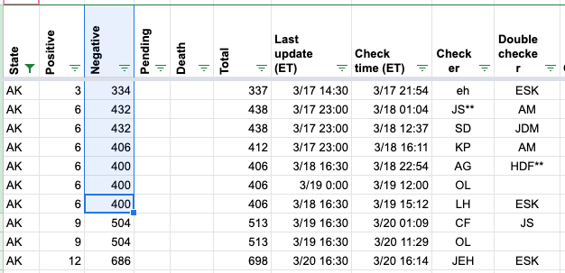
Daily Report: 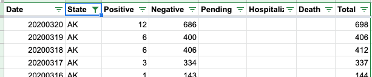
State Data from 3/17 14:09 ET: 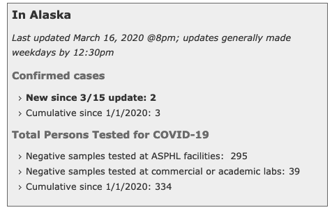
State Data from 3/17 18:00 ET: 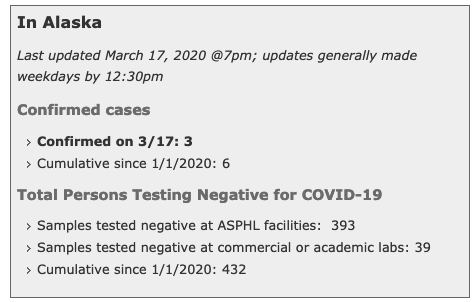
State Data from 3/18: 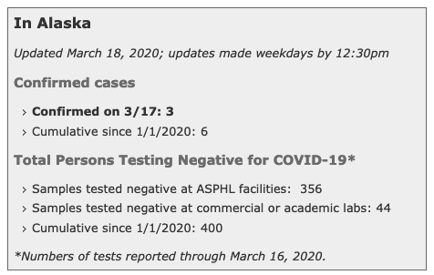
Updated Daily after correction: 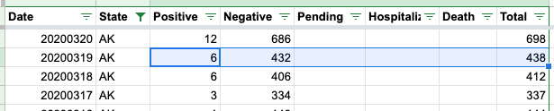
District of Columbia 3/10 - 3/11
- [ ] We do not have screen grabs from this time period
- [ ] It looks like DC changed how they were reporting data. I am going to make both days match
DC Before update: 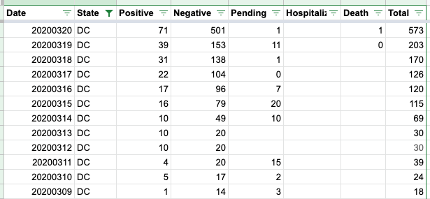
DC after update: 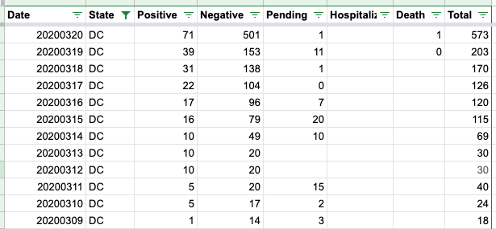
-
[ ] ID has an issue with a change in data from 3/18 to 3/19 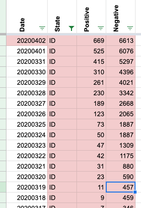
-
[ ] Screen cap of State Data from 3/18 14:04: 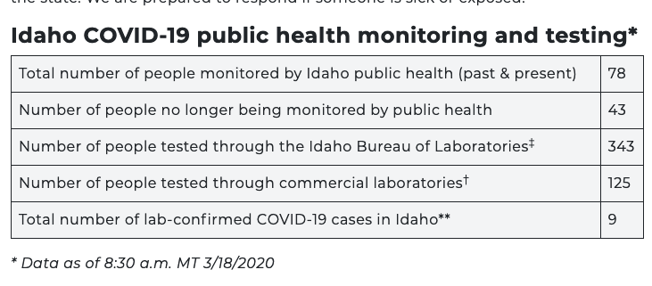
-
[ ] Screencap of State Data from 3/19 14:04: 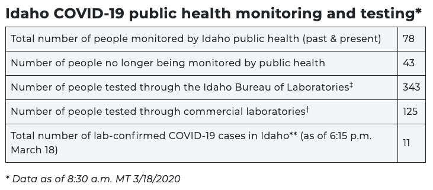
-
[ ] The positives increase, while the total tests reported did not. Our methodology is to leave the negatives unchanged in this case. Fixed data below: 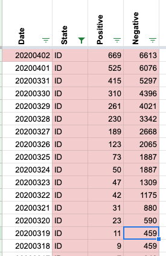
This issue has been automatically marked as stale because it has not had recent activity. It will be closed if no further activity occurs. Thank you for your contributions!
This issue has been closed because it was stale for 15 days, and there was no further activity on it for 10 days. You can feel free to re-open it if the issue is important, and label it as “not stale.”
Uploading a spreadsheet of all decreases (more than documented previously), current as of today: covidtracking_problemdates.xlsx
States affected: AK, AL, AZ, CO, DC, DE, FL, HI, IA, KS, MA, MD, MI, NJ, NM, NV, NY, OH, OK, PR, RI, SC, WI
This is my R code to calculate new cases and pull records that decreased from the prior day (any variable) AND the prior day’s row for comparison: